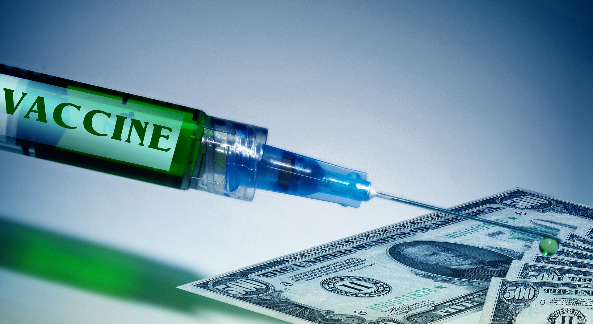

Research/Vaccine/Drug
COVID-19 drug development |
| COVID‑19 drug development is the research process to develop a preventative vaccine or therapeutic prescription drug that would alleviate the severity of Coronavirus disease 2019 (COVID‑19). Internationally during May 2020, several hundred drug companies, biotechnology firms, university research groups, and health organizations were developing 159 vaccine candidates and 293 potential therapies for COVID‑19 disease in various stages of preclinical or clinical research. By late April, some 330 clinical trials were in progress worldwide to evaluate potential therapies against COVID-19. |
| The World Health Organization (WHO), European Medicines Agency (EMA),[6] US Food and Drug Administration (FDA),[7] and the Chinese government and drug manufacturers were coordinating with academic and industry researchers to speed development of vaccines, antiviral drugs, and post-infection therapies. The International Clinical Trials Registry Platform of the WHO recorded 536 clinical studies to develop post-infection therapies for COVID‑19 infections, with numerous established antiviral compounds for treating other infections under clinical research to be repurposed |
|  |
Vaccine |
| There is no available vaccine, but various agencies are actively developing vaccine candidates. Previous work on SARS-CoV is being used because both SARS-CoV and SARS-CoV-2 use the ACE2 receptor to enter human cells.Three vaccination strategies are being investigated. First, researchers aim to build a whole virus vaccine. The use of such a virus, be it inactive or dead, aims to elicit a prompt immune response of the human body to a new infection with COVID‑19. A second strategy, subunit vaccines, aims to create a vaccine that sensitises the immune system to certain subunits of the virus. In the case of SARS-CoV-2, such research focuses on the S-spike protein that helps the virus intrude the ACE2 enzyme receptor. A third strategy is that of the nucleic acid vaccines (DNA or RNA vaccines, a novel technique for creating a vaccination). Experimental vaccines from any of these strategies would have to be tested for safety and efficacy. |
 |
Medications |
| At least 29 phase II–IV efficacy trials in COVID‑19 were concluded in March 2020, or scheduled to provide results in April from hospitals in China.[355][356] There are more than 300 active clinical trials underway as of April 2020.[129] Seven trials were evaluating already approved treatments, including four studies on hydroxychloroquine or chloroquine.[356] Repurposed antiviral drugs make up most of the Chinese research, with nine phase III trials on remdesivir across several countries due to report by the end of April.[355][356] Other candidates in trials include vasodilators, corticosteroids, immune therapies, lipoic acid, bevacizumab, and recombinant angiotensin-converting enzyme 2. |
 |
Passive Antibodies |
| Transferring purified and concentrated antibodies produced by the immune systems of those who have recovered from COVID‑19 to people who need them is being investigated as a non-vaccine method of passive immunisation.[380] This strategy was tried for SARS with inconclusive results.[380] Viral neutralisation is the anticipated mechanism of action by which passive antibody therapy can mediate defence against SARS-CoV-2. Other mechanisms, however, such as antibody-dependent cellular cytotoxicity and/or phagocytosis, may be possible.[380] Other forms of passive antibody therapy, for example, using manufactured monoclonal antibodies, are in development.[380] Production of convalescent serum, which consists of the liquid portion of the blood from recovered patients and contains antibodies specific to this virus, could be increased for quicker deployment |